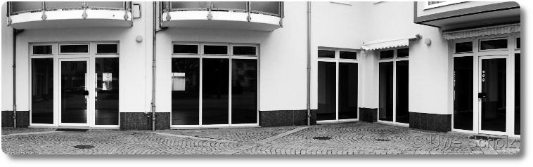

Vor wenigen Wochen ist, vielleicht etwas unbemerkt, die Nachricht durch
die Medien gewandert, dass …
…bis zu 50.000 Läden in deutschen Innenstädten angesichts des
Online-Handel-Booms in ernsthaften Existenznöten…
seien. So sah es der Deutsche Städte- und Gemeindebund, der gleichzeitig
vor einer Verödung der Innenstädte warnte. Leere Schaufenster in den
Innenstädten würden zu einer Abwärtsspirale führen, und die Stadtzentren
verlören so an Attraktivität. Ich glaube ja, dass das Problem eigentlich
woanders liegt. Deswegen hole ich etwas weiter aus…
Aufgewachsen bin ich auf einem Dorf und es war daher für mich immer
etwas besonderes, wenn es mit den Eltern in die nächste Kleinstadt zum
Einkaufen ging. In fast jeder Straße gab es das ein oder andere kleine
Geschäft, und irgendwo konnte irgendwie jeder meiner Wünsche erfüllt
werden. Und dann wurde außerhalb der Stadt ein riesiger Tempel eröffnet:
Ein „Kaufland“ und direkt daneben ein Baumarkt.
In Ostdeutschland muss die Zeit nach der Wende für solche Märkte eine
wahre Goldgrube gewesen sein. Zwar hatten bald nach dem Mauerfall auch
viele Läden in der Innenstadt ihr Warenangebot auf die neue bunte Welt
umgestellt. Aber dieser eine Tempel außerhalb meiner Heimatstadt hatte
einige Asse im Ärmel, mit denen kein anderer Laden mithalten konnte:
Es gab eine riesige Verkaufsfläche, in der man sich verlaufen konnte.
Man bekam einfach alles, was das Herz begehrte, in einem einzigen Einkauf.
Endlich konnte man sich soviel man wollten selber aus dem Regal nehmen. Ohne von einem Verkäufer beäugt zu werden.
Und am allerwichtigsten: es gab einen gigantischen Parkplatz. FÜR ALLE!
Abgesehen davon, dass man dort zu Fuß oder mit dem Fahrrad nur
schwerlich hinkam, konzentriert sich nun seit vielen Jahren das
bürgerliche Wochenend-Treiben um diesen Tempel. Für Besitzer eines
motorisierten Unterbaus ist dieses abgelegene Einkaufsviertel immer eine
Spritztour wert. Deswegen haben sich dort alsbald noch viele andere
Geschäfte angesiedelt: Tankstellen, Auto-Werkstätten, Autohäuser, eine
Bowlingbahn mit Kneipe, Geschäfte für Immobilien, etc. pp. Direkt neben
Kaufland gibt es außerdem noch einen Technik-Markt und zwei
Bekleidungsgeschäfte.
Diese Entwicklung hat ihre Spuren hinterlassen und mit der Zeit mussten
die ersten Händler in der Innenstadt aufgeben. Alteingesessene Tante
Emma Läden waren als erste dran, dann Zeitschriften-Geschäfte,
verschiedene Klamotten-Läden, aber auch Restaurants und Lokale. Erst
kürzlich musste die einzige Buchhandlung weit und breit schließen (die
aber später von zwei tollen ehemaligen Mitarbeiterinnen wieder eröffnet
wurde). Der Zerfall geschah nicht nur in der Innenstadt, sondern auch in
den kleinen umliegenden Städten und Gemeinden. Und er hält bis heute
an . In verschiedenen Stadtteilen öffneten außerdem verschiedene
Discounter, nachdem alte „Kaufhallen“ geschlossen wurden, in denen es
bisher ausschließlich Nahrungsmittel und Drogerieartikel zu kaufen gab.
Auch in Langen, der Stadt, in der wir heute wohnen, gibt es mehrere
Discounter. Bevor ich einen „Werbung-Stopp“-Schild auf unseren
Briefkasten klebte, hatten wir auch noch regelmäßig deren Werbung im
Briefkasten. Aber irgendwann merkte ich, dass wir eigentlich nur noch
dabei waren, den Aktionswochen von Lidl, Aldi & Co hinterherzugeifern:
„Oh, schau mal, nächste Woche gibt’s Schreibutensilien für’s Büro. Brauchen wir!“
„Wandersachen und -Ausrüstung! Wir könnten doch demnächst endlich mal wieder Wandern gehen, brauchen wir da nicht auch dieses tolle Survival-Kit? Wow, kostet nur xx Euro! Gleich morgen hol ich’s uns.“
„Ah, endlich gibt’s wieder was für’s Fahrrad. Ich brauchte doch schon lange eine neue Luftpumpe/Flickzeug/Fahrradtasche…“
Und so ging es in einem fort. Immer und immer wieder, jede Woche auf’s
Neue. Und da fragte ich mich irgendwann: Ist es wirklich nötig, nur dann
bestimmte Dinge zu kaufen, wenn sie in der Discounter-Werbung stehen?
Warum haben wir sie nicht in einem der vielen Läden besorgt, die genau
diese Ware immer anbieten? Bei denen es Beratung, Fachwissen und eine
viel größere Auswahl gibt. Hätte es nicht auch die Fitness-Matte, das
Schreibset, die grüne Blumenvase, und, und ,und vom Schreibwarengeschäft
oder vom Kaufhaus gegenüber getan?
Zugegeben, die Waren dort sind teurer als beim Discounter und sie werden
im Zweifel auch nicht unter ökologischen oder sozialen Gesichtspunkten
hergestellt. Aber die Gewinne, die in den kleinen Geschäften der Stadt
gemacht werden, die bleiben hier! Zum Beispiel kümmert sich das Kaufhaus
um die Ecke darum, dass die Fassade und die Straße drum herum gut
aussieht und fußgängerfreundlich ist. Dort können sich
Mitarbeiter verwirklichen
und haben echte, fordernde Aufgaben, manchmal ein ganzes
Arbeitsleben lang. Ganz zu schweigen davon, dass lokale Geschäfte sich
als Sponsoren von hiesigen Vereinen hervortun und damit den sozialen
Zusammenhalt in der Stadt stärken. Welcher Discounter kann damit schon
für sich werben?

Zwar behauptet der Städte- und Gemeindebund, der neue Feind des
stationären Handels seien Geschäfte im Internet, aber das sehe ich nicht
so. Denn der wahre Feind sind die Discounter, die unschlagbar gut darin
sind, Bedürfnisse zu erschaffen, indem sie nur für kurze Zeit bestimmte
Haushaltswaren anbieten, die Gewinne abgreifen, ihre Angestellten zum
Teil wie -
Sklaven -
behandeln und nicht viel zur Gesellschaft beitragen.
Heute scheint mir diese Entwicklung nur schwer aufhaltbar zu sein. Das
macht mich traurig, weil die großen Ketten noch reicher und und noch
mächtiger werden und damit die Preise bestimmen können. Und in der
Konsequenz tatsächlich viele Innenstädte veröden. Der einzige Ausweg aus
dieser Situation ist, dass sich Konsumenten endlich ihrer Macht im
Geldbeutel bewusst werden. Aber statt dessen wird oft über die teuren
kleinen Läden genörgelt (oft von denen, die es sich leisten könnten) und
nicht daran gedacht, dass diese keine mächtige Einkaufsabteilung im
Backoffice haben.